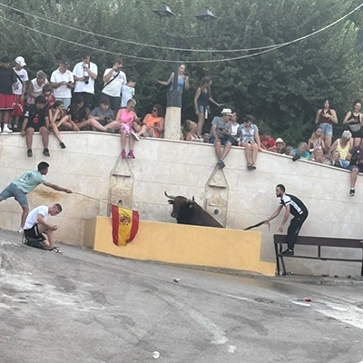

Culture
The Spanish are a very proud people, with Gonzalo constantly reminding me that Spain has the best history and the best food and the best sights (I sometimes agreed). Like mentioned before, Spanish culture varies greatly depending on the region, city, or even town, so what I experienced is only one piece of the larger Spanish cultural scene. I would love to be able to recount experiences from all over–from Andalucía to Asturias–but two weeks is too short of a time to fully take in a country so densely packed with culture and wonder as Spain.
Corrida de Toros (Running of the Bulls)
A more tame version of the controversial bullfighting that takes place with matadors in arenas, the Spanish love to let 2-3 large bulls loose in the streets of a town and have volunteers taunt them and run away. I went to one of these events, and although I didn’t run, I saw many brave Spaniards try their luck against Spain’s national animal (and luckily it didn’t turn bloody).
Correpies
Correpies is a local tradition of Mondéjar in which thousands of kilograms of explosives and fireworks are let loose in the town square right at the feet of hundreds of participants. I unfortunately left about a week before the event, but I still got to test out some of the excitement on Gonzalo’s patio.
Las Fiestas
If the Spanish are known for one thing, it's their parties. The chill nature of the Spanish people mixed with them seemingly never having to work lends to some of the most fun nights that often last until 5 or 6am. Every Friday and Saturday night (and some weekdays too), there’ll be live music, dancing, food, and good times in the town square. If I wasn’t living the true Spanish experience at the parties, I would be jealous listening to them from my bed, trying to catch up on lost sleep from those same parties.
Art
A long, rich history at the center of the world with the Renaissance and Enlightenment and a thousand other pivotal events gave way to some of the greatest and most influential artists the world has ever seen. I was grateful to be able to take in the works of Salvador Dalí, Pablo Picasso, Fransico Goya, Diego Velazquez, and many more artists in world renowned museums like the Prado or the Spanish Royal Collections.
